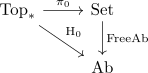

zeroth singular homology functor as free abelian group for zeroth homotopy functor
Proposition
Given category Top*, the following functors are canonically naturally isomorphic

where
- $\mathrm{FreeAb}$ is the free abelian group functor
- $\mathrm{H}_0$ is the singular homology functor
- $\pi_0$ is the homotopy group functor
Proof
object
Let $X$ be a topological space, then since a \(0\)-simplex is a point, we get
\begin{align*}
C_0(X) = \mathbb{Z}[X]
\end{align*}
as free abelian group on $X$.
Then $\mathrm{im}(d_1)$ consists of elements of the form $x - y$, such that $[x] = [y]$ are in the same path component Hence we get the quotient $x \sim y \Leftrightarrow [x] = [y] \in \pi_0(X)$
Since the free abelian group functor is a left adjoint and a left adjoint preserves colimits, it preserves set theoretic quotients as colimit. Thus
\begin{align*}
H_0(X) =& \mathbb{Z}[X]/~ \\
\cong& \mathbb{Z}[X/\sim] \\
=& \mathbb{Z}[\pi_0(X)]
\end{align*}
morphism
TODO